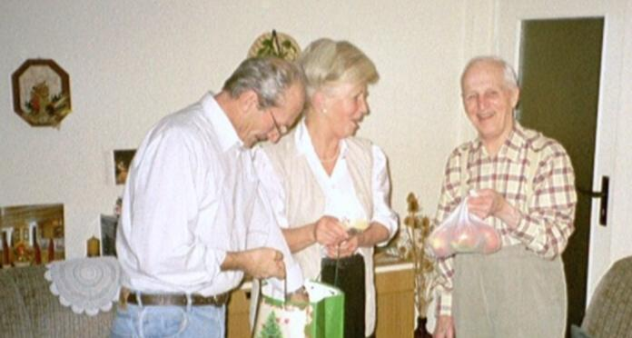

Recette n° 170 : Leipziger
Allerlei
Quelques mots en allemand avant de donner, en français, la recette.
Auf dem Foto hierunter sind
man meinen lieben Freund Kurt mit seiner Tochter Marianne und seinem
Schwiegersohn Siegfried ;
sie haben mir ein schönes Rezeptbuch als Weihnachtsgeschenk geschickt ;
der Titel des Buchs ist "Sächsische Küche, ein kulinarischer Streifzug von
Leipzig bis Dresden".
mein erstes Rezept aus diesem Buch ist die Leipziger Allerlei, eine
leckere Speise !
Kurt, Marianne und Siege seien dank !

Ingrédients pour 2 personnes
- 200 g de carottes en rondelles fines
- 125 g de chou-fleur en fleurettes
- 100 g d’asperges en bocal découpées en tronçons
- 1 chou-rave épluché et coupé en bâtonnets
- 100 g de haricots verts en boîte découpés en tronçons
- 150 g de petits pois surgelés
- 6 gros champignons de Paris frais nettoyés et coupés en 4 dans le sens de la hauteur
- 100 g de beurre
- sel, poivre selon goût
- une pincée de sucre
- 1 verre de vin blanc
- 75 g de crème fraîche
- ¼ cc (cuiller à café) de noix de muscade râpée
- 100 g de crevette surgelés ou de chair de crabe en boîte
- 1 petit bouquet de persil lavé, égoutté et haché

Préparation :
1 - décongeler les petits pois
2 - cuire les champignons à la poêle 5 mn dans un peu de beurre
3 - mettre à chauffer un litre d’eau dans une cocotte, ajouter sel, sucre, une cc de beurre
4 - y mettre les légumes, sans les remuer, à mijoter 10 mn (ils doivent rester croquants)
5 - les sortir, les passer sous l’eau froide, les laisser s’égoutter
6 - porter à ébullition 100 ml de l’eau de cuisson des légumes avec le vin blanc
7 - ajouter la crème, et faire réduire de moitié à feu doux
8 - assaisonner la sauce avec sel, poivre sucre et muscade
9 - égoutter les crevettes ou la chair de crabe dans une passoire
10 - mettre à fondre le reste de beurre (sauf une cuiller à soupe) et y faire revenir les crevettes ou la chair de crabe quelques minutes
11 - sortir de la poêle et garder au chaud
12 - faire revenir les champignons et les légumes séparément dans le beurre restant, réserver au chaud
12 - saler et poivrer selon goût
13 - disposer les légumes, les champignons et chair de crabe sur les assiettes et napper de sauce
14 - saupoudrer de persil et servir aussitôt
Observations :
recette exécutée en janvier 2008 à Quiberon grâce à un livre de cuisine saxonne que m'a offert mon ami Kurt Helfer de Dresde à Noël ; le livre avait été choisi et acheté par sa fille Marianne.